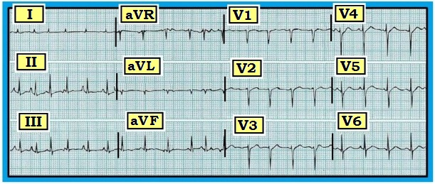
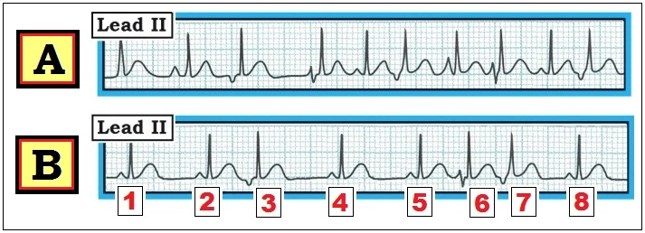
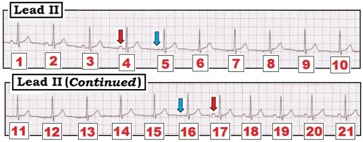

ECG Blog #65 (AFib - RVH - ổ tạo nhịp lang thang - nhịp nhanh nhĩ đa ổ (MAT))
Điện tâm đồ ở Hình 1 được ghi từ một bệnh nhân đến khám vì khó thở.
- Bạn đọc bản ghi 12 chuyển đạo này như thế nào? Nhịp là gì?
- Nguyên nhân do phổi hay do tim nhiều khả năng gây ra nhịp này hơn?


Diễn giải NHỊP:
Mặc dù không có dải nhịp DII dài — Chúng ta vẫn có thể diễn giải nhịp bằng cách quan sát cả 12 chuyển đạo trên bản ghi này.
- Phức bộ QRS hẹp. Nhịp không đều.
- Mặc dù nhịp này không đều một cách tổng thể — đây không phải là AFib (rung nhĩ – Atrial Fibrillation). Thay vào đó, hoạt động nhĩ rõ ràng có thấy ở từng chuyển đạo thành dưới (II,III,aVF). Điều này đặc biệt đúng ở DII — nơi thấy nhiều hình thái sóng P khác nhau. Do đó nhịp là MAT (nhịp nhanh nhĩ đa ổ – Multifocal Atrial Tachycardia).
- Dễ hiểu vì sao nhịp không đều hoàn toàn ở Hình 1 có thể bị nhầm với AFib — NẾU theo dõi chỉ qua một chuyển đạo duy nhất, nơi sóng P không dễ thấy. Thật vậy, quan sát các chuyển đạo I; V1,V2,V3 không hề gợi ý nhịp là MAT — và các chuyển đạo thành dưới thực sự là nơi duy nhất thấy rõ sự thay đổi hình thái sóng P từ nhát này sang nhát khác.
Diễn giải PHẦN CÒN LẠI của điện tâm đồ 12 CHUYỂN ĐẠO ở Hình 1:
Sau khi đã diễn giải Tần số và Nhịp — Chúng tôi tiếp tục Cách tiếp cận Hệ thống bằng việc đánh giá tiếp Các khoảng (PR-QRS-QT) – Trục – Phì đại (= Lớn các buồng tim) — và Thiếu máu cục bộ/Nhồi máu (= Thay đổi Q‑R‑S‑T ):
- Các khoảng: Như đã nói — QRS hẹp. Việc xác định khoảng PR không có ý nghĩa trong bản ghi này vì hình thái sóng P liên tục thay đổi. Khoảng QT có vẻ nằm trong giới hạn bình thường (không quá một nửa khoảng R-R) — dù việc đánh giá thời gian khoảng QT trở nên khó khăn (và kém chính xác hơn nhiều) khi tần số nhanh và không đều như ở đây.
- Trục: Trục hướng thẳng đứng — dù vẫn nằm trong giới hạn bình thường (0 đến 90 độ). Chúng tôi ước tính trục QRS trung bình khoảng +80 độ (vì QRS ở DI chỉ vừa đủ dương ).
- Phì đại: RAA. Có thể RVH. Không có LVH. (Xem phần Tổng hợp lại bên dưới.)
- Thay đổi QRST: Ngoài một sóng q có thể có ở aVL — không có sóng Q. Vùng chuyển tiếp muộn ở các chuyển đạo trước tim (sóng R không trở nên cao hơn độ sâu của sóng S cho đến giữa V5 và V6). Có các bất thường ST-T không đặc hiệu — nhưng không có thay đổi cấp tính.
------------------------------------------
Tổng hợp lại: Hình 1 = MAT
Chủ đề xuyên suốt ca này bắt nguồn từ việc nhận ra nhịp tim là MAT. Đúng như tên gọi — với MAT có nhiều (multiple) dạng hoạt động nhĩ (atrial) ở tần số nhanh (nhịp nhanh – tachycardia). MAT hầu như luôn xảy ra ở một trong 2 bối cảnh lâm sàng thường gặp:
- Bối cảnh lâm sàng #1: Bệnh phổi (COPD; hen phế quản lâu năm; tăng áp động mạch phổi).
- Bối cảnh lâm sàng #2: Bệnh nhân bệnh cấp tính nặng có bệnh đa cơ quan (tức là nhiễm khuẩn huyết; sốc; rối loạn điện giải và/hoặc toan–kiềm).
-------------------------------------
Tổng hợp các dấu hiệu điện tâm đồ thấy ở Hình
1 gợi ý mạnh rằng bệnh nhân khó thở này có bệnh phổi đáng kể:
- Trục QRS trung bình hướng thẳng đứng. Điều này thường gặp ở bệnh nhân COPD lâu năm (bệnh phổi tắc nghẽn mạn tính – Chronic Obstructive Pulmonary Disease) — ở những người này tình trạng ứ khí phổi và cơ hoành hạ thấp thường làm trục QRS trung bình tương đối thẳng đứng.
- Điện thế QRS trung bình giảm. Dù chưa hẳn thỏa tiêu chuẩn điện tâm đồ của “điện thế thấp” (tức là biên độ QRS không quá 5mm ở mọi chuyển đạo chi) — điện thế QRS ở cả các chuyển đạo chi lẫn chuyển đạo trước tim rõ ràng thấp hơn mức thường thấy. Tác dụng cách điện của khí chiếm ưu thế trong lồng ngực khí phế thũng của bệnh nhân COPD là nguyên nhân làm giảm điện thế.
- Có lẽ có RAA (bất thường nhĩ phải – Right Atrial Abnormality) — gợi ý bởi việc một số sóng P có hình dạng khác nhau ở DII trông cao và nhọn. RAA là một dấu hiệu điện tâm đồ gián tiếp của RVH (tình trạng duy nhất gây lớn nhĩ phải mà không lớn thất phải là hẹp van ba lá).
- Chúng tôi nghĩ có lẽ có RVH. Phải thừa nhận — chẩn đoán RVH trên điện tâm đồ ở người lớn là cực kỳ khó. Đó là vì khối lượng giải phẫu của LV (thất trái) ở người lớn bình thường lớn hơn nhiều lần khối lượng của RV (thất phải). Do đó, ngay cả khi khối lượng RV tăng đáng kể — thường vẫn không đủ để tạo ra ưu thế các lực bên phải. Vì thế — các dấu hiệu điện tâm đồ đặc trưng của RVH như sóng R cao ở V1 và “tăng gánh” thất phải (ST-T chênh xuống ở các chuyển đạo thành dưới và/hoặc thành trước) thường không xuất hiện cho đến rất muộn trong diễn tiến bệnh phổi ở người lớn (lúc đó thường đã có tăng áp động mạch phổi). Tuy vậy — tập hợp các dấu hiệu điện tâm đồ khác kể trên ở bệnh nhân khó thở cấp này gợi ý ít nhất có thể (nếu không phải có lẽ) có RVH, ngay cả khi không có dấu hiệu điện tâm đồ xác định.
- Có sự tồn tại dai dẳng của sóng S ở chuyển đạo trước tim. Bình thường — hoạt động điện ở các chuyển đạo trước tim bên V5,V6 hoàn toàn dương, phản ánh hướng khử cực chiếm ưu thế về phía thất trái lớn hơn nhiều. Ở bệnh nhân bệnh phổi — sóng S nhỏ đến trung bình thường tồn tại ở các chuyển đạo trước tim bên trái. Lưu ý ở Hình 1 — rằng: i) Vùng chuyển tiếp muộn (sóng R không trở nên lớn hơn sóng S cho đến giữa V5 và V6); và ii) Vẫn thấy sóng S đáng kể (5 mm) ở chuyển đạo bên V6.
- Chuyển đạo I gần như là một vectơ trung tính (null vector). Nghĩa là — sóng P, phức bộ QRS và sóng ST-T ở DI đều có biên độ rất nhỏ. Dấu hiệu này (được gọi là “dấu hiệu Schamroth”) — gợi ý mạnh bệnh phổi đáng kể (và có lẽ RVH) với điều kiện: i) Không đặt sai vị trí điện cực; và, ii) Có các dấu hiệu điện tâm đồ khác của bệnh phổi. Sóng R rất nhỏ 2-3 mm và sóng ST-T dẹt thấy ở Hình 1 đủ tiêu chuẩn là “dấu hiệu Schamroth” trên bản ghi này.
- Bệnh nhân có triệu chứng chính là khó thở.
- Nhịp tim là MAT. Ngay cả khi là dấu hiệu đơn độc — MAT cũng phải khiến bạn nghĩ nhiều tới bệnh phổi đáng kể. Trong bối cảnh ca này, nó khiến RVH có khả năng cao.
------------------------------------------
MAT không phải AFib – ổ tạo nhịp lang thang – hay – nhịp nhanh xoang kèm PAC:
MAT không phải AFib. Dù cả hai đều là nhịp không đều hoàn toàn — trong AFib hoàn toàn không có sóng P, trong khi với MAT thấy nhiều sóng P có hình dạng khác nhau. Tầm quan trọng của việc phân biệt AFib với MAT — là cân nhắc điều trị rất khác nhau cho hai rối loạn nhịp này. Hiếm khi cần kiểm soát tần số bằng thuốc trong MAT (rối loạn nhịp này thường đáp ứng tốt nhất với điều trị bệnh phổi nền hoặc bệnh đa cơ quan của bệnh nhân).
- Theo kinh nghiệm của chúng tôi — MAT là rối loạn nhịp tim thường bị bỏ sót đứng thứ 2 (sau cuồng nhĩ – AFlutter). MAT dễ bị bỏ sót — vì phần lớn áp đảo các nhịp SVT không đều kéo dài hóa ra là AFib.
- Cách tốt nhất để tránh bỏ sót MAT là: i) Nghĩ tới chẩn đoán này khi thấy một nhịp không đều ở bệnh nhân bệnh cấp tính nặng, đặc biệt nếu có bệnh phổi nặng; và, ii) Luôn ghi điện tâm đồ 12 chuyển đạo khi đánh giá các nhịp không đều.
------------------------------------------
MAT cũng không phải nhịp nhanh xoang kèm PAC. Hãy xem hai dải nhịp DII ở Hình 2:
- Có MAT ở một hay cả hai bản ghi này không?


------------------------------------------
TRẢ LỜI cho Hình 2:
Nhịp ở Bản ghi A của Hình 2 là MAT. Lưu ý hình thái sóng P thay đổi thất thường và liên tục từ nhát này sang nhát khác. Ngược lại — Bản ghi B là nhịp nhanh xoang kèm PAC. Khác với MAT — có một nhịp xoang nền với những giai đoạn từng lúc cùng một sóng P xoang giống nhau xuất hiện liên tiếp trong ít nhất vài nhát liền nhau.
- Lưu ý hình thái sóng P giống nhau (và khoảng PR giống nhau) ở các nhát #1,2,4,5, và 8 trong Bản ghi B của Hình 2. Đây là các sóng P của nhịp xoang nền.
- Sự không đều ở Bản ghi B là do nhiều PAC hiện diện (các nhát #3,6,7). Lưu ý sự khác biệt hình thái sóng P của các PAC này. Tuy vậy — bằng chứng rõ ràng về nhịp xoang nền cho thấy nhịp này không phải MAT.
- Cần hiểu rằng Hình 2 chỉ là một “ảnh chụp nhanh” của những gì đang diễn ra trên lâm sàng. Bản ghi A và B chỉ là một dải nhịp 4 giây. Việc đánh giá đúng mức độ thực sự của sự thay đổi tần số và hình thái sóng P chỉ có thể xác định bằng một thời gian theo dõi dài hơn.
------------------------------------------
LƯU Ý LÂM SÀNG: Các biến thể của “chủ đề MAT"
Có nhiều khả năng cho các nhịp SVT không đều thuộc “vùng trung gian” có biểu hiện sóng P. Chẳng hạn — những nhịp mà nếu không thì gợi ý là “MAT” không phải lúc nào cũng “nhanh”. Hơn nữa — thời điểm chuyển từ nhịp xoang kèm nhiều PAC có hình dạng khác nhau sang “MAT” thường khó xác định.
- Phần lớn các trường hợp — sẽ thấy rõ khi nhịp là nhịp nhanh xoang kèm PAC. Tuy vậy — đôi khi có thể khó (không thể) phân biệt giữa MAT với nhịp nhanh xoang kèm PAC.
- “Tin tốt” — là về mặt lâm sàng việc có nhịp nào trong hai nhịp này không quan trọng. Đó là vì ý nghĩa lâm sàng của MAT với nhịp nhanh xoang kèm nhiều PAC là như nhau khi một trong hai nhịp này gặp ở bệnh nhân có một trong các bối cảnh lâm sàng thuận lợi cho MAT. Trong cả hai trường hợp — ưu tiên là xác định và điều trị bệnh lý nền.
- CẢNH BÁO cuối cùng: — MAT không phải là ổ tạo nhịp lang thang. Thay vì hình thái sóng P thay đổi từ nhát này sang nhát khác (như thấy trong MAT) — với ổ tạo nhịp lang thang có sự dịch chuyển từ từ hình thái sóng P (Hình 3). Máy tạo nhịp lang thang thường là một biến thể bình thường. MAT thì hoàn toàn không phải một biến thể “bình thường”.


------------------------------------------
Ngoài phần cốt lõi: MAT với ổ tạo nhịp lang thang
Từ Hình 3 có thể thấy rõ rằng thực sự cần một thời gian theo dõi dài hơn để chẩn đoán xác định “ổ tạo nhịp lang thang”. Về mặt kỹ thuật — Hình 3 không đủ tiêu chuẩn, vì chỉ thấy hai vị trí nhĩ khác nhau. Tuy vậy, chúng tôi dùng hình minh họa này vì nó làm nổi bật sự thay đổi từ từ từ một hình thái sóng P (dương ở các nhát #1,2,3,4 và #17,18,19,20,21) sang một hình thái khác (sóng P đẳng điện ở các nhát #5 đến 16).
------------------------------------------
ĐIỀU CỐT LÕI: MAT với ổ tạo nhịp lang thang
MAT và ổ tạo nhịp lang thang là hai đầu của một phổ. Theo một nghĩa nào đó — MAT đơn giản là một “ổ tạo nhịp lang thang” có tần số nhanh và hình thái sóng P thay đổi từ nhát này sang nhát khác. Do đó cần phán đoán lâm sàng (kèm hiểu biết về tiền sử bệnh của bệnh nhân) để đánh giá các trường hợp trung gian, trong đó tần số chậm hơn và mức thay đổi sóng P nằm giữa định nghĩa chặt chẽ của MAT và của ổ tạo nhịp lang thang.
-------------------------------------
- Để biết thêm – XEM:
- Để biết thêm về ổ tạo nhịp lang thang — Vui lòng xem ECG Blog #155.
- Bấm VÀO ĐÂY để tới ECG Blog #93 (trích từ 1st Book on ECGs-2014) của chúng tôi, bài ôn lại những điều cơ bản trong Cách tiếp cận hệ thống để đọc điện tâm đồ 12 chuyển đạo.
- Để biết thêm về Lớn các buồng tim — XEM — ECG Blog #92 (về LVH) — ECG Blog #75 (về RAA/LAA) — ECG Blog #77 (về RVH).
- Liên kết tới BÌNH LUẬN của tôi trên trang web ECG Guru về việc dùng dấu hiệu Schamroth trong chẩn đoán RVH (bài viết và bản ghi này được Jason Roediger trình bày rất xuất sắc).